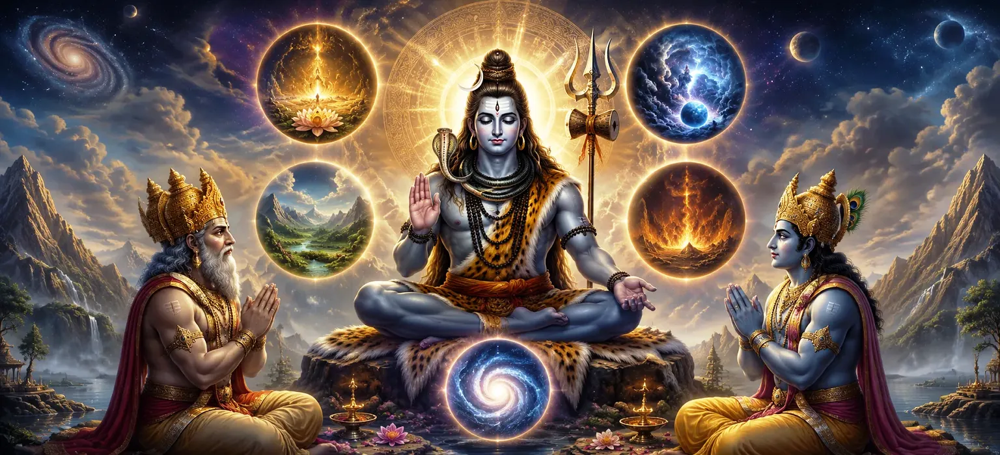

After revealing Himself as Maheshvara and establishing His supreme position in the previous chapter, Lord Shiva now unveils one of the deepest spiritual teachings of the Shiva Purana. Brahma and Vishnu, eager to understand the mysteries of the universe, respectfully ask the Lord to explain the five cosmic activities through which the worlds are created, sustained and guided. In response, Shiva reveals the doctrine of Panchakritya—the five eternal functions of creation, preservation, dissolution, concealment and divine grace. He further explains the sacred significance of Omkara (Om), the primordial sound from which all existence emerges. This chapter forms the philosophical heart of the Vidyeshvara Samhita and provides profound insight into the relationship between the universe, the five elements and the Supreme Lord.
The manifestation of worlds, beings and existence.
The maintenance and protection of creation.
The withdrawal of creation at the proper time.
The veiling of truth through divine power.
The granting of liberation and spiritual awakening.
Shiva is the ultimate source and controller of all five cosmic activities.
Lord Shiva replied to Brahma and Vishnu that the universe is governed through five eternal activities known as Panchakritya. Out of compassion, He revealed this sacred knowledge which had remained hidden from even the greatest beings. These five acts are Creation (Srishti), Preservation (Sthiti), Dissolution (Samhara), Concealment (Tirobhava) and Grace (Anugraha). Shiva explained that creation brings forth worlds and living beings. Preservation sustains them and maintains cosmic order. Dissolution withdraws creation when its purpose is fulfilled. Concealment veils the true nature of reality, causing souls to remain bound within worldly existence. Finally, Grace removes ignorance and grants liberation, enabling the soul to realize its divine nature. Among these five activities, Anugraha (Grace) is considered the highest because it alone leads to Moksha. Through divine grace, the soul transcends the cycle of birth and death and attains union with the Supreme Lord. Thus Shiva revealed that He is not merely the destroyer as commonly perceived, but the Lord who performs all five cosmic functions.
Represents stability, support and manifestation.
Represents nourishment, preservation and continuity.
Represents transformation, purification and dissolution.
Lord Shiva explained that the five cosmic acts are reflected throughout creation. The universe is composed of five great elements—earth, water, fire, air and space—and each element participates in the divine order established by Maheshvara. Earth provides stability and form. Water nourishes and sustains life. Fire transforms and purifies. Through these elements, the cosmic functions become visible in the material world. Every aspect of creation reflects the wisdom and power of the Supreme Lord. Thus Shiva taught that the universe itself is a living expression of divine activity. By understanding the elements and their functions, a seeker gains insight into the deeper workings of creation and the presence of the Lord in all things.
Grace transcends all other cosmic activities.
Divine grace destroys illusion and reveals truth.
Through grace, the soul attains union with the Supreme.
Among the five cosmic acts, Shiva described Anugraha (Grace) as the highest and most mysterious. Creation, preservation, dissolution and concealment govern the universe, but grace alone frees the soul from bondage and reveals its true nature. The Lord explained that knowledge, austerity and worship are important, yet liberation ultimately becomes possible through divine grace. When the Lord's compassion descends upon a devotee, ignorance is destroyed and spiritual awakening takes place. This teaching emphasizes that the goal of all spiritual practice is to become receptive to the grace of Maheshvara. Through His blessing, the soul transcends worldly limitations and realizes its eternal unity with the Supreme Reality.
Om is the first vibration from which creation unfolds.
Shiva declares Omkara to be identical with His own divine nature.
Meditation upon Om leads the seeker toward higher realization.
Having explained the five cosmic activities, Lord Shiva revealed the secret of Omkara, the sacred syllable Om. He taught that Om is not merely a sound but the primordial vibration from which the universe emerges. It is the essence of all mantras and the foundation of spiritual knowledge. Shiva declared that Omkara is identical with His own divine nature. Those who meditate upon Om with devotion gradually purify their minds and become capable of perceiving the Supreme Reality. Through Om, the seeker moves from the world of names and forms toward the eternal truth that transcends them all. For this reason, Om has been revered by sages and devotees throughout the ages. It serves as both a symbol of the Lord and a bridge leading the soul toward liberation.
Shiva reveals that His five faces govern the five cosmic acts.
Each face represents a specific divine function within creation.
Though the functions are many, the Lord performing them is one.
Lord Shiva further explained that in order to oversee the five cosmic functions, He manifests five divine faces. These faces symbolize His omnipresent authority over creation, preservation, dissolution, concealment and grace. The universe appears diverse because of these activities, yet they all arise from the same Supreme Lord. Shiva taught that the five faces are not separate deities but different expressions of one eternal reality. Through them, the Lord governs the entire cosmos while remaining beyond all limitation. This teaching helps devotees understand how one Supreme Being can perform many functions without losing His essential unity. Brahma and Vishnu listened with great attention, realizing that every aspect of cosmic order ultimately rests in Maheshvara. The five faces became a sacred symbol of Shiva's all-encompassing power and wisdom.
The beginning of manifestation and creation.
The power of preservation and continuity.
The withdrawal of creation into its source.
The seed of divine consciousness.
The subtle cosmic vibration beyond sound.
Together they form the sacred syllable Om.
Lord Shiva explained that Omkara is composed of five sacred components: A, U, M, Bindu and Nada. Each part possesses a profound spiritual meaning and reflects a specific aspect of the divine reality. Together they form the complete expression of the primordial sound Om. The letters A, U and M represent the visible aspects of cosmic existence, while Bindu and Nada signify the subtle and transcendent dimensions beyond ordinary perception. Through these five parts, Omkara becomes a complete symbol of the universe and its divine source. Shiva taught that meditation upon Om leads the seeker from the gross world to the subtle and finally to the realization of the Supreme Reality. Thus Omkara serves as both a symbol of the cosmos and a path to liberation.
Represents the removal of ignorance.
Represents surrender to the Divine.
Represents Shiva's presence within all existence.
After explaining Omkara, Lord Shiva revealed the greatness of the Panchakshara Mantra—“Namah Shivaya.” He declared this sacred mantra to be one of the highest means of approaching the Supreme Lord. The mantra contains the essence of spiritual knowledge and the power of divine grace. Shiva taught that sincere repetition of this mantra purifies the mind, removes accumulated impurities and gradually awakens devotion within the heart. Through constant remembrance of “Namah Shivaya,” the seeker becomes connected to the presence of the Lord in every aspect of life. The Panchakshara Mantra became one of the most sacred treasures of the Shaiva tradition. Countless sages, saints and devotees have attained spiritual progress through its repetition and meditation.
All Vedic mantras emerge from Omkara.
The sacred syllable is the foundation of spiritual wisdom.
Omkara carries the presence of the Supreme Lord.
Lord Shiva explained that Omkara is the root from which all sacred sounds and mantras arise. Just as a mighty tree grows from a tiny seed, countless spiritual teachings and Vedic mantras emerge from the single syllable Om. It is the source of divine speech and the foundation of sacred knowledge. The Lord further taught that every mantra derives its power from Omkara. Whether recited in worship, meditation or sacrifice, sacred mantras ultimately trace their origin back to this primordial vibration. For this reason, Om is revered as the essence of all scriptures and spiritual disciplines. By meditating upon Om, a seeker connects with the same divine source from which all wisdom flows. Thus Omkara serves not only as a sound but as a living bridge between the individual soul and the Supreme Reality.
Contemplation on Om purifies the mind.
The seeker gradually realizes the divine Self.
Omkara ultimately leads the soul to Moksha.
Shiva taught that Omkara is not merely a subject of study but a path of direct spiritual realization. When recited with devotion and contemplated with concentration, Om gradually removes mental impurities and awakens higher awareness within the seeker. As meditation deepens, the seeker begins to transcend attachment to the material world and experiences the presence of the divine within. The sound Om becomes a guide leading the soul from ignorance to knowledge, from restlessness to peace, and from bondage to freedom. Lord Shiva declared that sincere contemplation of Om ultimately leads to liberation. Through this sacred syllable, the soul realizes its eternal connection with the Supreme Reality and attains freedom from the cycle of birth and death. This is the highest blessing hidden within the mystery of Omkara.
Shiva explained the five eternal cosmic functions.
The primordial sound Om was revealed as the source of creation.
Grace was declared the highest of all cosmic acts.
In this profound chapter, Lord Shiva revealed the mystery of Panchakritya—the five cosmic acts of creation, preservation, dissolution, concealment and grace. He explained that these activities govern the entire universe and are ultimately performed by the Supreme Lord alone. Brahma and Vishnu learned that Shiva is the source behind all cosmic order and spiritual liberation. The Lord then disclosed the sacred significance of Omkara (Om), the primordial vibration from which all existence emerges. He taught that Om contains the essence of divine knowledge, the foundation of all mantras and the pathway leading the soul toward realization of the Supreme Reality. Finally, Shiva emphasized that divine grace is the highest blessing. Through meditation upon Om and devotion to the Lord, seekers transcend ignorance, attain wisdom and ultimately achieve liberation from the cycle of birth and death.
"From Om arises creation, through Om the universe is sustained, and through the grace hidden within Om, the soul attains liberation."
The Shiva Purana describes Om as the primordial vibration existing before creation itself.
Creation, preservation, dissolution, concealment and grace are all governed by Shiva.
Among the five cosmic acts, divine grace alone grants liberation.
Having explained the mystery of Omkara and the five cosmic functions, Lord Shiva now turns toward practical spiritual worship. In the next chapter, He explains the proper method of worshipping the Shiva Linga, the sacred symbol through which devotees can connect with the Supreme Lord. The chapter reveals the spiritual benefits of Linga worship, the procedures to be followed, and the importance of devotion in daily practice.
The Worship of the Shiva Linga
The teachings now move from philosophy to daily worship.
Devotees learn the divine methods of honoring Lord Shiva.
Panchakritya refers to Shiva's five eternal cosmic activities: creation, preservation, dissolution, concealment and divine grace.
Om is the primordial sound from which the universe emerged and is regarded as the essence of all mantras and spiritual knowledge.
The Panchakshara Mantra is “Namah Shivaya,” one of the most sacred mantras dedicated to Lord Shiva.
Anugraha (Divine Grace) is considered the highest because it grants liberation and spiritual awakening.
The next chapter explains the worship of the Shiva Linga and its spiritual significance for devotees.
Explore the previous and next chapters of Vidyeshvara Samhita.